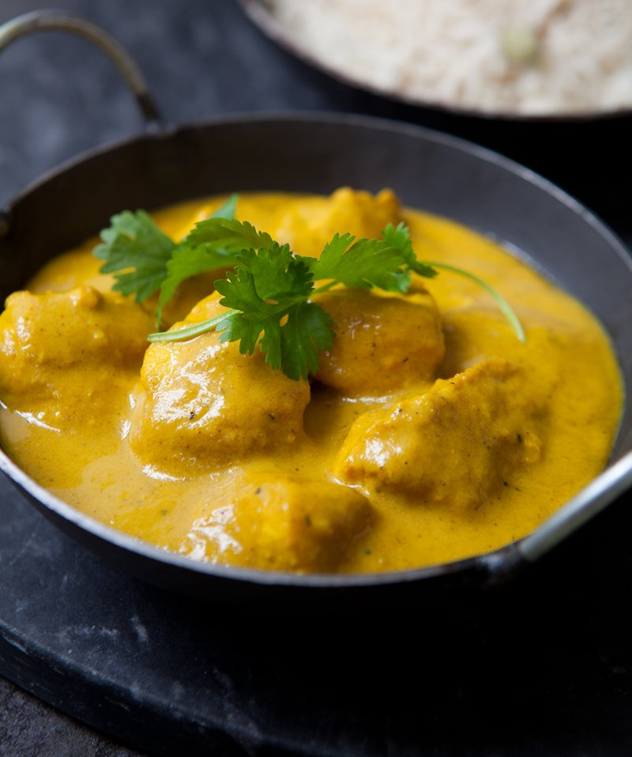

The Hairy Chicken Korma
Rich, creamy and with lots of chicken. And not so hairy!
Info
- Serves: 4
- Prep Time: 30 minutes
- Cooking Time: 40 minutes
- Calories: 294/serving
Ingredients
4 fairly small boneless, skinless chicken breasts (about 600g)
- 25g natural yoghurt
- 1 tbsp sunflower oil
- 2 large onions, chopped
- 4 garlic cloves, peels and sliced
- 20g fresh root giner, peeled and grated
- 12 cardamon pods, seeds crushed
- 1 tbso ground cumin
- 1/2 heaped tsp ground tumeric
- 1/4 tsp hot chilli powder
- 1 bay leaf
- 4 whole cloves
- 1 tbsp plain flour
- 2 tsp caster sugar
- 1/2 tsp fine sea salt, plus extra to season
- 300ml cold water
- 3 tbsp double cream
- freshly ground black pepper
- fresh coriander, roughly torn, to garnish
Method
-
Cut the chicken breast into bite-sizeed pieces and season with black pepper and put into a non-metallic bowl.
Stir in yoghurt, cover with cling film and chill for minimum of 30 minutes. Ideally 2-6 hours.
-
Heat the oil in a large, non-stick sauce pan and add onions, garlic and ginger.
Cover and cook on a low heat for 15 minutes until very soft and lightly coloured. Stir the onions occassionally so they don't stick.
-
Once onions are softened, stir in crush cardamon seeds, cumin, coriander, tumeric, chilli powder and the bay leaf.
Pinch of the edges of the cloves and throw them into the pan. Cook spices and the onions for 5 minutes, stirring constantly.
-
Stir in flour, sugar and 1/2 a teaspoon of salt, and slowly pour the water into the pan, stirring constantly.
Bring to a gentle simmer, then cover and cook for 10 minutes. Remove pan from the heat and take out the bay leaf.
Blitz the onion mixture with a stick blender until smooth as possible.
-
Drain the chicken in a colander over the sink, shaking a few times to allow the chicken
to only have a light coating of yoghurt. Place a non-stick frying pan on the heat, add sauce and bring to simmer.
Add the chicken pieces and cream and cook for 10 minutes or until chicken is tender and cooked through. Check chicken pieces
after 8 minutes to make sure no pink is remaining.
- Serve at once with the coriander
Back to home